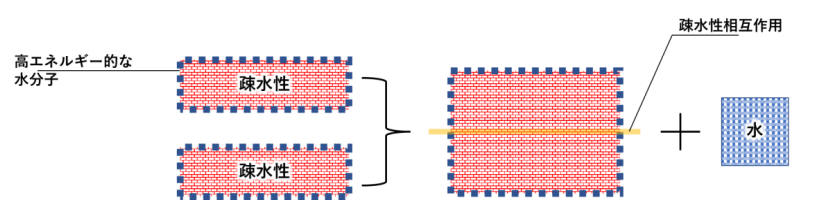
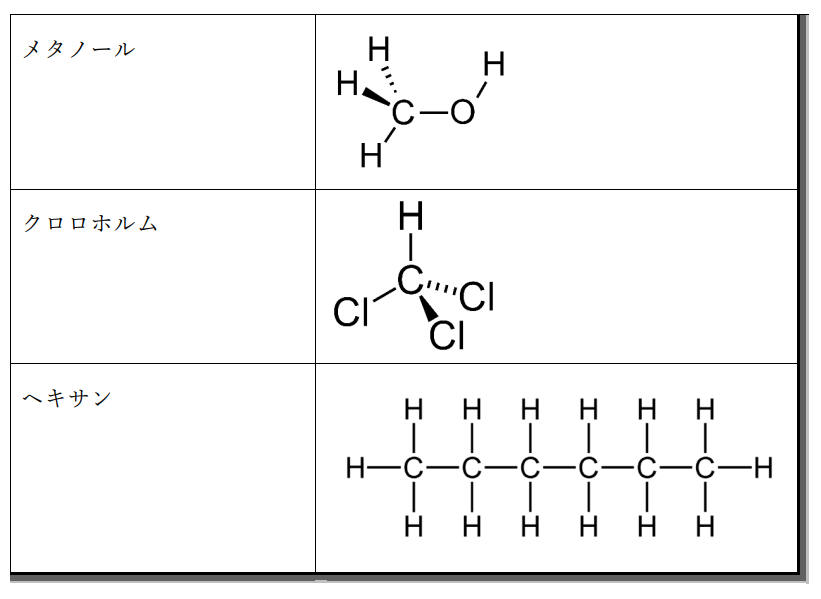

正向柱状色谱法和反向柱状色谱法
利用红外光谱法来分析有机化合物的结构，具体来说，就是用一种特殊的仪器发射红外光，让它穿过有机化合物的样品，然后测量不同波长的红外光被吸收的程度，从而得到一种叫做红外光谱的图像。

红外光谱法是一种分析化学的方法，可以用来分析有机化合物的结构。具体来说，就是利用不同的有机化合物中的不同官能团在不同波长的红外光下会发生不同的振动，从而产生不同的吸收峰，来判断有机化合物中有哪些官能团，以及它们的相对位置。一般来说，吸收峰越强，说明官能团越多；吸收峰越尖，说明官能团越单一；吸收峰越宽，说明官能团越复杂。我用的是一种叫做苯乙酸的有机酸作为样品，它有一个羧基和一个苯环，可以通过红外光谱法分析出来。

做实验的时候，我先用一个研钵和研杵把苯乙酸研磨成粉末，然后用一个量筒量了一定量的苯乙酸粉末，放在一个小盘子里。接着，我用一个红外光谱仪的样品架把小盘子夹住，然后把样品架放在红外光谱仪的扫描区域。然后，我用一个电脑控制红外光谱仪的工作参数，比如扫描范围、扫描速度、扫描次数等。然后，我按下开始按钮，让红外光谱仪开始扫描样品。我等了大约五分钟，就看到电脑屏幕上显示了一张红外光谱图。
观察结果的时候，我先用一个红外光谱图的软件打开了电脑屏幕上显示的红外光谱图，然后用一个放大镜仔细观察了不同波长的红外光的吸收情况。我发现在1700厘米-1左右有一个很强很尖的吸收峰，说明样品中有羧基；在3100厘米-1左右有一个很弱很宽的吸收峰，说明样品中有芳香环。这样就证明了我的样品是苯乙酸，没有被污染或者变质。我觉得这个实验可以让我了解更多有关红外光谱法的知识。
|